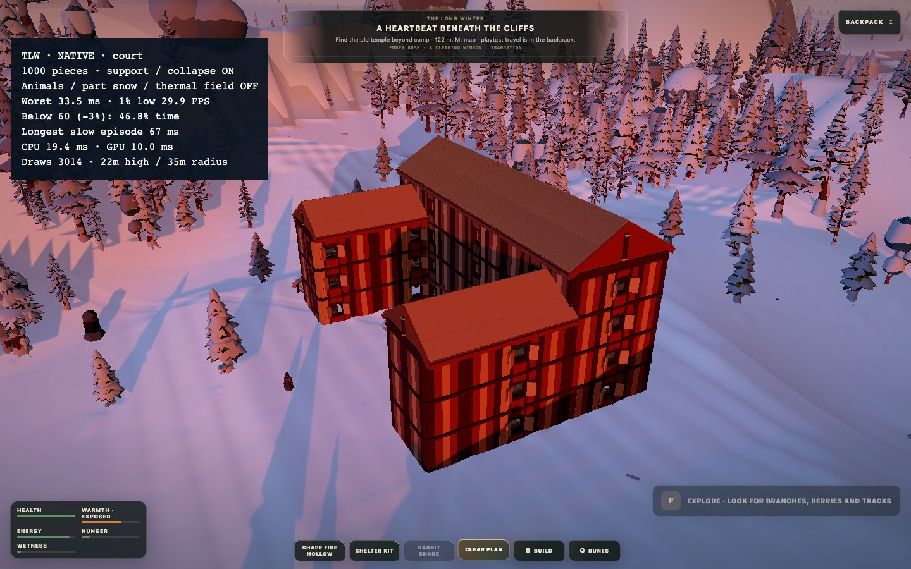
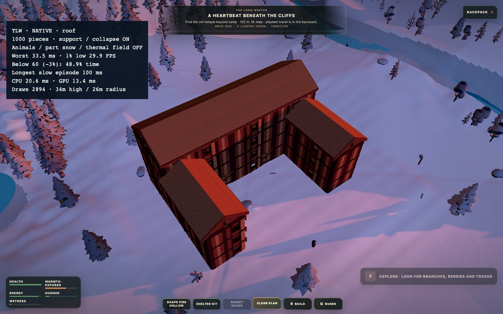
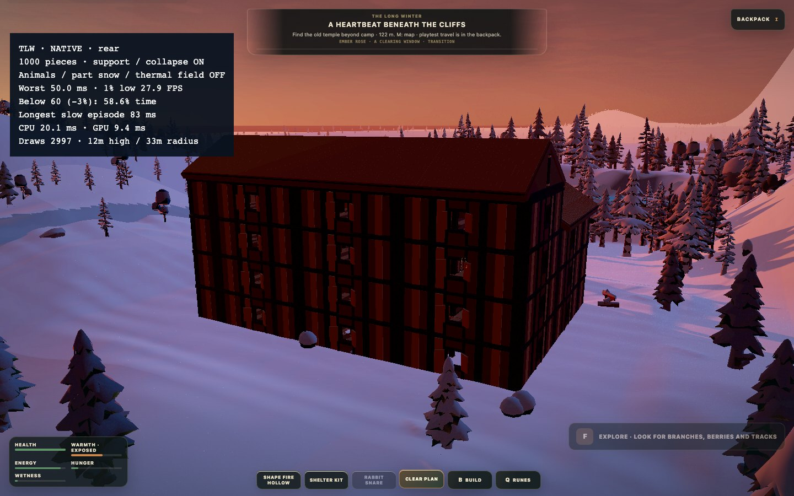
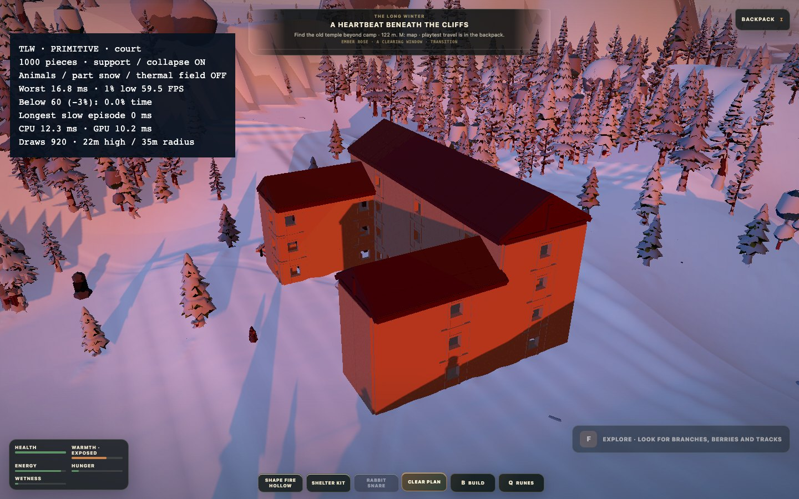
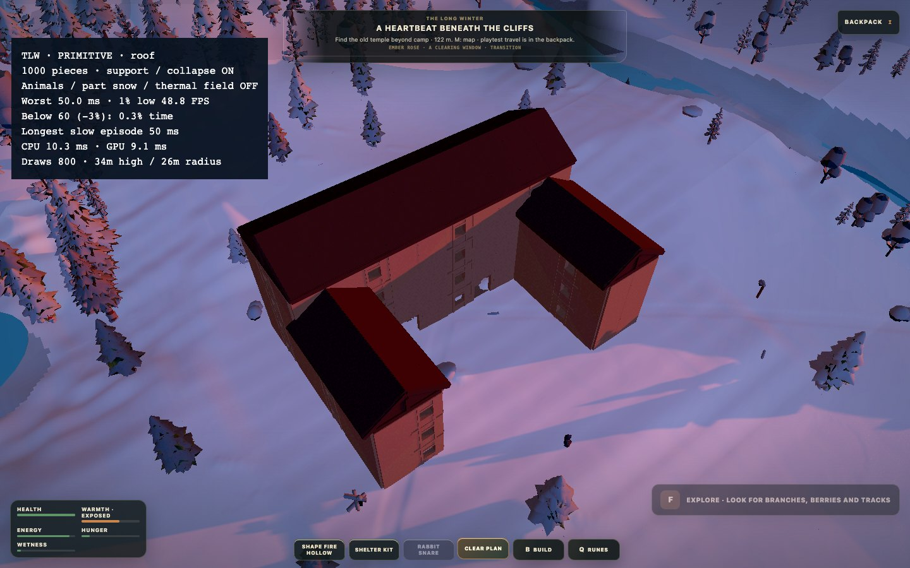
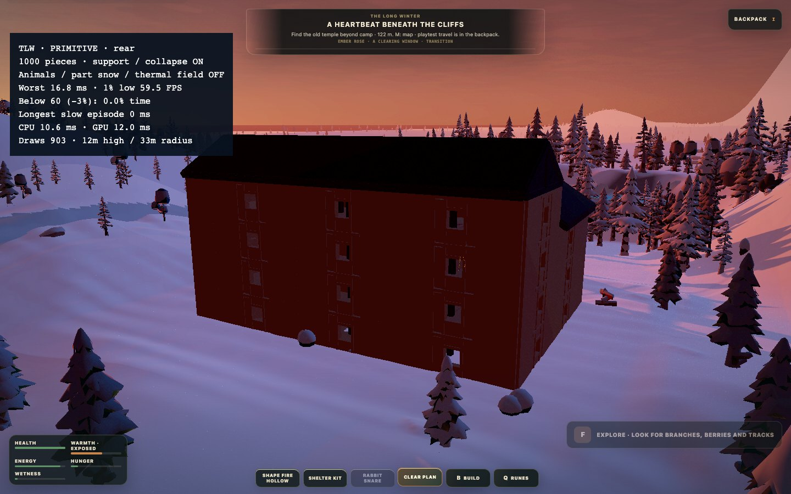

11.9.2026 · samat nykyiset ja testiprimitiiviset assetit, sama aiemmin tallennettu talo ja kolme kuvakulmaa. Ei uusi socket-rakennus eikä hiirellä rakentamisen hyväksyntä.
Eläimet, rakennusosien pintalumi ja lämpökentät pois. Maan/puiden lumi, sää, rakennustuki, sortuminen, tuli ja savu jäävät käyttöön. Tallennetut tiedot säilytetään. Pelin oletusassetteja ei korvata testilaatikoilla.
Tarkka prefabin geometriayhdistely tehdään enintään kahdessa jaetussa workerissa. Pääsäie ei odota valmistumista: osat säilyvät näkyvissä ja valmistunut esitys otetaan käyttöön rajatuissa erissä. Tuen ja maaston generoinnin aiemmat workerit säilyvät. Kaikkea laskentaa ei ole siirretty workereihin; renderöinti/poiminta/kollisio ja pelitilan muutokset jäävät pääsäikeelle.
15 s / kuvakulma, lämpenemisen jälkeen. Alitusaika on ajalla painotettu; alla 60 FPS ja näkyvästi ilmoitettu 3 % toleranssi (17,182 ms). Tiukat 60/120-rajat ja kaikki alitusjaksot ovat raakadatassa. Ei keski-FPS-hyväksyntää.
| Variantti | Hitain ruutu | 1 % low | Alitusaika | Pisin jakso | Draws p50 |
|---|---|---|---|---|---|
| native · court | 33.5 ms | 29.9 FPS | 46.7 % | 66.7 ms | 3014 |
| native · roof | 33.5 ms | 29.9 FPS | 48.9 % | 100.0 ms | 2894 |
| native · rear | 50.0 ms | 27.9 FPS | 58.6 % | 83.3 ms | 2997 |
| primitive · court | 16.8 ms | 59.5 FPS | 0.0 % | 0.0 ms | 920 |
| primitive · roof | 50.0 ms | 48.8 FPS | 0.3 % | 50.0 ms | 800 |
| primitive · rear | 16.8 ms | 59.5 FPS | 0.0 % | 0.0 ms | 903 |
Vakaa 60 FPS ei ole vielä hyväksytty. M1 Pro, Chrome headless, 1440 × 900, kehityspalvelin ja noin 60 Hz:n rytmi. Ei RTX-tulos eikä 120 FPS:n hyväksyntä. Sää etenee: kyseessä ei ole täydellisesti jäädytetty A/B. Talon käynnistys/lataus, kuvat ja suurpalo eivät kuulu mittausikkunoihin.
Primitiivit ovat vain testiadapteri: portaat näkyvät laatikkona ja liikkuvat ovi-/ikkunalehdet puuttuvat. Pysyvä primitiivisiirtymä ei ole tämän kokeen päätös.
Yhteenveto ja worker-tarkistukset · Nykyisten assettien ruutuajat · Primitiivien ruutuajat · Aiempi mittaus ominaisuudet päällä · Peli
CPU p50 20.2 / p95 24.3 ms · GPU p50 10.1 ms. Valmistuneita geometriatöitä 15; virheitä 0.

CPU p50 21.0 / p95 25.2 ms · GPU p50 10.0 ms. Valmistuneita geometriatöitä 15; virheitä 0.

CPU p50 22.9 / p95 27.9 ms · GPU p50 9.9 ms. Valmistuneita geometriatöitä 15; virheitä 0.

CPU p50 11.3 / p95 15.1 ms · GPU p50 9.9 ms. Valmistuneita geometriatöitä 0; virheitä 0.

CPU p50 11.3 / p95 15.3 ms · GPU p50 9.2 ms. Valmistuneita geometriatöitä 0; virheitä 0.

CPU p50 12.4 / p95 16.0 ms · GPU p50 9.2 ms. Valmistuneita geometriatöitä 0; virheitä 0.
